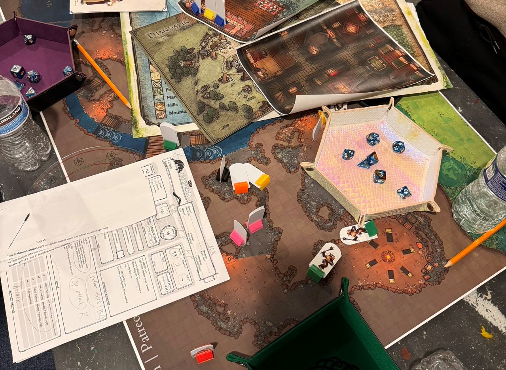

About Me
Education: Shanghaitech University, University of California, Berkeley, University of Pittsburgh
Research Interests:2D material,excitonic structure, polariton, light-matter interaction
Publications: Google scholar link
Education: Shanghaitech University, University of California, Berkeley, University of Pittsburgh
Research Interests:2D material,excitonic structure, polariton, light-matter interaction
Publications: Google scholar link

High-efficiency polariton Laser
We have placed a van der Waals homostructure, formed by
stacking three two-dimensional layers of WS2 separated by insulating hBN, similar to a
multiple-quantum well structure, inside a microcavity, which facilitates the formation of
quasiparticles known as exciton-polaritons. The polaritons are a combination of light and matter,
allowing laser emission to be enhanced by nonlinear scattering, as seen in prior polariton lasers.
In the experiments reported here, we have observed laser emission with an ultralow threshold. The
threshold was approximately 59 nW/μm2, with a lasing efficiency of 3.82%. These findings suggest a
potential for efficient laser operations using such homostructures.
Magneto-optic and electronic characterization of quaternion state in TMD bilayers
Previous experimental and theoretical work has given evidence of the existence
of doubly charged exciton states in strongly screened bilayers of transition metal
dichalcogenide (TMD) layers. These complexes are important because they can,
in principle, undergo Bose-Einstein condensation (BEC), in which case they
would also be a new type of superconductor, carrying net charge. In this paper
we present key electrostatic and magnetic measurements that definitively con-
firm the existence of these charged boson complexes. These include 1. continuous
control of the doping density with both positive and negative carriers, showing
the expected population dependence on the free carrier density, and 2. measure-
ment of the dependence on magnetic field, showing that time-reversal symmetry
is broken for these complexes, in agreement with the theoretical prediction. These
results imply that it is promising to look for BEC and superconductivity in this
system.

Teaching:physics lab 101
Outreach: Snoke Lab
Equity & Inclusion: Our lab is highly diverse with members from various backgrounds.
Email:qiw74@pitt.edu
Address:Allen Hall G17